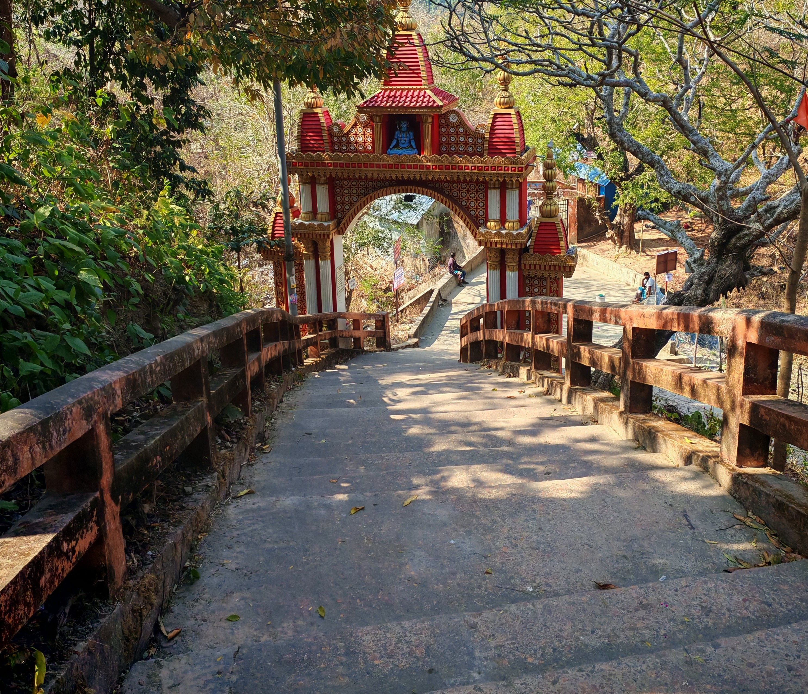
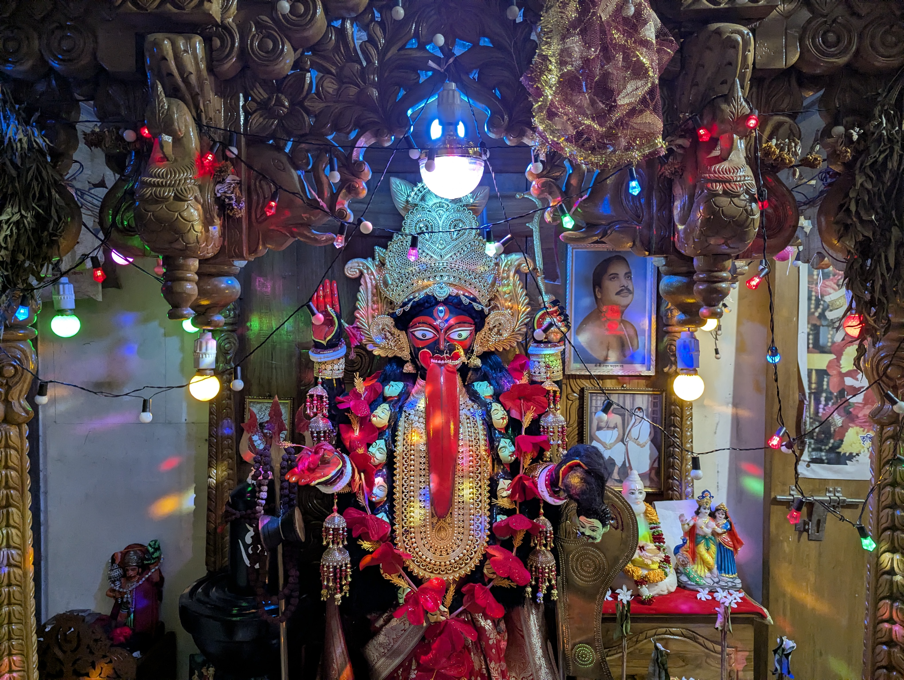
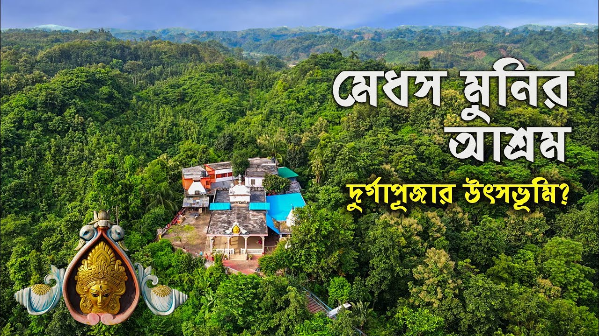
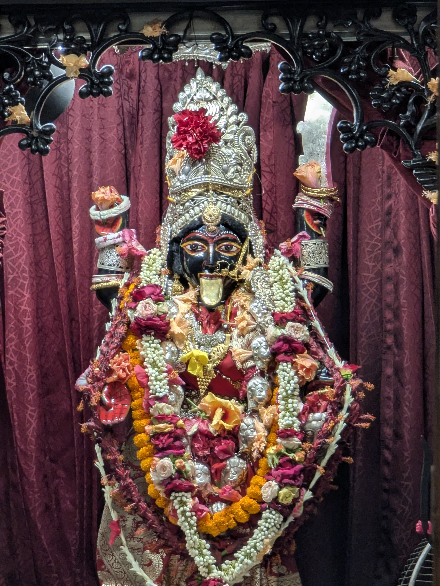
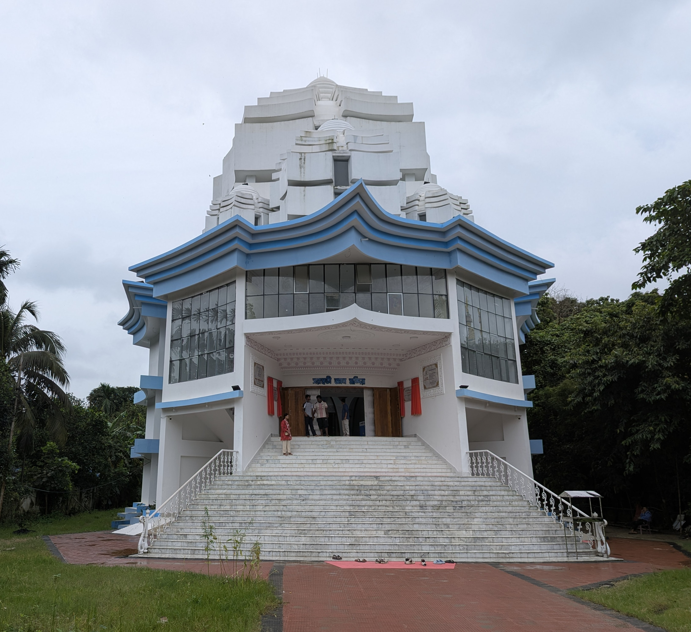
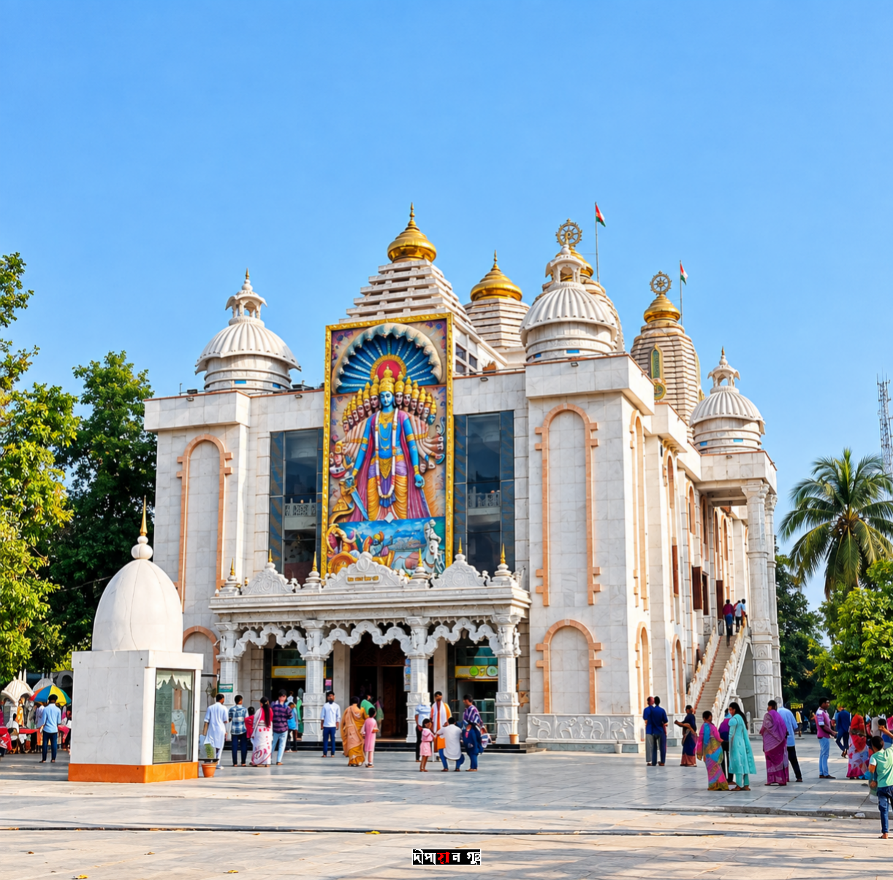
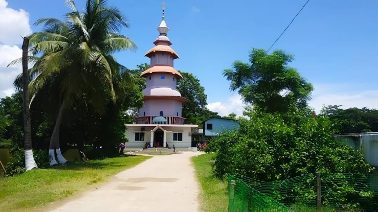
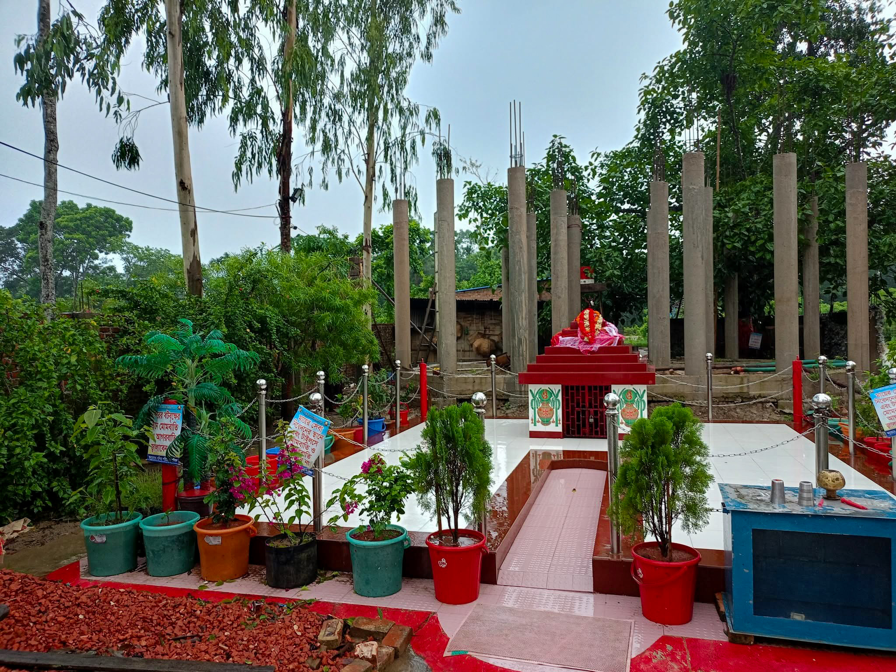

ইতিহাসের পাতায় চট্টগ্রামের মন্দির ও আরাধনা
প্রতিষ্ঠা → পরিবর্তন → ঐতিহ্যের বিস্তার → বর্তমান — প্রতিটি মন্দিরের নিজস্ব যাত্রা।
চট্টগ্রামের মন্দিরগুলো শুধু উপাসনার স্থান নয়; এগুলো বহন করে বহু বছরের ইতিহাস, সংস্কৃতি, ঐতিহ্য ও মানুষের ভালোবাসা। প্রাচীন মন্দির থেকে ঐতিহ্যবাহী পুজো—জেনে নিন তাদের প্রতিষ্ঠার ইতিহাস, কাহিনি ও সময়ের সঙ্গে গড়ে ওঠা ঐতিহ্য

চন্দ্রনাথ মন্দির
বাংলাদেশের চট্টগ্রামের উত্তর-পূর্বে চন্দ্রনাথ পাহাড়ের উপরে অবস্থিত চন্দ্রনাথ মন্দির অন্যতম বিখ্যাত শক্তিপীঠ। অপরূপ প্রাকৃতিক সৌন্দর্যের লীলাভূমি চট্টগ্রামের সর্বোচ্চ পাহাড় চূড়ায় অবস্থিত এই মন্দির হিন্দু ধর্মাবলম্বীদের কাছে অত্যন্ত পবিত্র একটি তীর্থস্থান। হিন্দু পুরাণ অনুসারে, এখানে সতী দেবীর ডান হাত (দক্ষিণ হস্ত) পতিত হয়েছিল।পাহাড়ের পাদদেশে দেবী ভবানী এবং চূড়ায় শিব বা চন্দ্রনাথ—এই দুইয়ের উপস্থিতির কারণে স্থানটি শাক্ত এবং শৈব—উভয় সম্প্রদায়ের সাধকদের কাছেই সমানভাবে পূজনীয়।
পৌরাণিক উপাখ্যান ও গুরুত্ব:
সত্য যুগে প্রজাপতি দক্ষের মহাযজ্ঞে দেবাদিদেব মহাদেবকে অপমান করা হলে, দেবী সতী সেই অপমান সহ্য করতে না পেরে যজ্ঞকুণ্ডে আত্মাহুতি দেন। প্রাণহীনা স্ত্রীর শোকে উন্মত্ত মহাদেব সতীর মৃতদেহ কাঁধে নিয়ে বিশ্বব্যাপী তাণ্ডব নৃত্য শুরু করেন। সৃষ্টির ধ্বংস রোধ করতে ভগবান বিষ্ণু তাঁর সুদর্শন চক্র দ্বারা সতীর দেহ খণ্ডিত করেন। এতে দেবী সতীর দেহখন্ডসমূহ ভারতীয় উপমহাদেশের ৫১টি বিভিন্ন স্থানে পতিত হয় এবং এ সকল স্থানসমূহ তীর্থস্থান বা শক্তিপীঠ হিসেবে পরিচিতি পায়। হিন্দু ধর্মাবলম্বীদের বিশ্বাস অনুযায়ী, চন্দ্রনাথ পাহাড়ের এই পবিত্র স্থানে দেবী সতীর দক্ষিণ হস্ত বা ডান হাত পতিত হয়েছিল।
পাহাড়ের চূড়ায় অবস্থিত মূল মন্দিরে পৌঁছানোর আগে পাদদেশে বেশ কয়েকটি পবিত্র স্থান রয়েছে, যার মধ্যে অন্যতম হলো 'ব্যাসকুণ্ড'। পৌরাণিক কিংবদন্তি অনুযায়ী, মহামুনি ব্যাসদেব এই কুণ্ডের তীরে বসে অশ্বমেধ যজ্ঞ সম্পন্ন করেছিলেন এবং দীর্ঘকাল ধ্যানমগ্ন ছিলেন। ব্যাসকুণ্ডের পাশেই রয়েছে শতবর্ষী এক প্রাচীন বটবৃক্ষ, যাকে 'অক্ষয় বট' বলা হয়। ভক্তরা চন্দ্রনাথ দর্শনে যাওয়ার আগে ব্যাসকুণ্ডে পুণ্যস্নান সম্পন্ন করেন।
ইতিহাস ও নামকরণ:
রাজমালা অনুসারে প্রায় ৮০০ বছর পূর্বে গৌড়ের বিখ্যাত আদিসুরের বংশধর রাজা বিশ্বম্ভর সমুদ্রপথে চন্দ্রনাথে পৌঁছার চেষ্টা করেন। ত্রিপুরার শাসক ধন মাণিক্য এ মন্দির থেকে শিবের মূর্তি তার রাজ্যে সরিয়ে নেয়ার অপচেষ্টা করে ব্যর্থ হন।
ঐতিহাসিক তথ্য থেকে জানা যায়, প্রাচীন নব্যপ্রস্তর যুগে চট্টগ্রামে মানুষের বসবাস শুরু হয়। ষষ্ঠ ও সপ্তম শতাব্দীতে সম্পূর্ণ চট্টগ্রাম অঞ্চল আরাকান রাজ্যের অধীনে ছিল। এর পরের শতাব্দীতে এই অঞ্চলের শাসনভার চলে যায় পাল সম্রাট ধর্মপালের হাতে (৭৭০-৮১০ খ্রি.)। সোনারগাঁও-এর সুলতান ফখরুদ্দীন মুবারক শাহ্ (১৩৩৮-১৩৪৯ খ্রি.) ১৩৪০ খ্রিষ্টাব্দে এ অঞ্চল অধিগ্রহণ করেন। পরবর্তীতে ১৫৩৮ খ্রিষ্টাব্দে বাংলার সুলতানি বংশের শেষ সুলতান গিয়াসউদ্দীন মাহমুদ শাহ সুর বংশের শের শাহ সুরির নিকট পরাজিত হলে এলাকাটি পুনরায় আরাকান রাজ্যের হাতে চলে যায়। পরবর্তীতে পর্তুগিজরাও আরাকানীদের সাথে এই অঞ্চলের শাসনকাজে ভাগ বসায়। প্রায় ১২৮ বছরের রাজত্ব শেষে ১৬৬৬ খ্রিষ্টাব্দে মুঘল সেনাপতি বুজুর্গ উমেদ খান আরাকানী ও পর্তুগিজদের হটিয়ে দিয়ে অঞ্চলটি দখল করে নেন। পরবর্তীতে এটি ব্রিটিশ ইস্ট ইন্ডিয়া কোম্পানির নিয়ন্ত্রণে যায়। ১৯৭১ সালের মুক্তিযুদ্ধের সময় এটি ২ নম্বর সেক্টরের অধীনস্থ একটি রণকৌশলগত এলাকা হিসেবে গুরুত্বপূর্ণ ভূমিকা পালন করে।
এই পবিত্র ভূমির নামকরণের পেছনে ভাষাতাত্ত্বিক ও ঐতিহাসিক বিবর্তন রয়েছে। জনশ্রুতি অনুসারে, ত্রেতাযুগে রামচন্দ্রের বনবাসের সময় সীতাদেবী এখানে একটি কুণ্ডে স্নান করেছিলেন, যার ফলে অঞ্চলের নাম ‘সীতাকুণ্ড’ এবং মন্দিরের আদি নাম ‘সীতার কুণ্ড মন্দির’ হিসেবে পরিচিতি পায়। তবে আধুনিক গবেষণায় ধারণা করা হয়, ফারসি শব্দ "শাত-ই-কন্দ" (যার অর্থ পার্বত্য সমুদ্রসৈকত) থেকে কালক্রমে 'সীতাকুণ্ড' শব্দটির উৎপত্তি ঘটেছে। ব্রিটিশ শাসনামলে দাপ্তরিক নথিপত্রে এই নামই স্থায়ীভাবে গৃহীত হয়।
শিব চতুর্দশী মেলা:
এই মন্দিরে প্রতিবছর শিবরাত্রি তথা শিব চতুর্দশী তিথিতে বিশেষ পূজা হয়; এই পূজাকে কেন্দ্র করে সীতাকুণ্ডে বিশাল মেলা হয়। সীতাকুণ্ড চন্দ্রনাথ পাহাড় এলাকা বসবাসকারী হিন্দু ধর্মাবলম্বীরা প্রতি বছর বাংলা ফাল্গুন মাসে (ইংরেজি ফেব্রুয়ারি-মার্চ মাস) বড় ধরনের একটি মেলার আয়োজন করে থাকে, যেটি শিব চতুর্দশী মেলা নামে পরিচিত। এই মেলায় বাংলাদেশ, ভারতসহ পৃথিবীর বিভিন্ন দেশ থেকে অসংখ্য সাধু-সন্ন্যাসী নারী-পুরুষ যোগদান করেন। এই মেলা দোলপূর্ণিমা পর্যন্ত স্থায়ী থাকে। প্রতি বছর পবিত্র এই তীর্থস্থানে ১০-২০ লক্ষাধিক তীর্থযাত্রীর আগমন ঘটে বলে মেলা কমিটির ধারণা।
যাতায়াত ব্যবস্থা:
চন্দ্রনাথ মন্দিরে সড়ক ও রেলপথ—উভয় মাধ্যমেই যাতায়াত করা যায়। ঢাকা থেকে সড়কপথে সরাসরি সীতাকুণ্ড বাজারে যাওয়া যায়। এছাড়া রেলপথে 'ঢাকা মেইল' বা অন্যান্য আন্তঃনগর ট্রেনে সীতাকুণ্ড, ফেনী অথবা চট্টগ্রাম স্টেশনে নেমে সড়কপথে সীতাকুণ্ড বাজারে পৌঁছানো সম্ভব। চট্টগ্রাম শহর থেকে লোকাল বাস বা সিএনজি অটোরিকশার মাধ্যমে সহজেই এই তীর্থস্থানে যাতায়াত করা যায়।

দাশ পরিবারের বুড়াকালী
চট্টগ্রামের বুকের দ্বিতীয় বুড়া কালি মায়ের প্রতিষ্ঠার গল্পটি আপনাদের কাছে তুলে ধরা হলো।
১৮-১৯ বছর বছর আগে কথা,
একজন মাতা পটিয়ার ধলঘাটের মা বুড়া কালী মন্দিরে গিয়েছিলেন, তারপর ওখান থেকে আসার পথে তার একটা ছবি খুব পছন্দ হয়, মায়ের মন্দিরে ওই ছবিটি আনার সময় উনি শুনতে পায় --
"তুই যে আমার ছবিটা নিয়ে যাচ্ছিস আমার নিত্য পূজা করতে পারবি তো? "
উনি বল্লো " পূজা করার চেষ্টা করবো মা । "
কালী মা বল্লো " যদি কিছু নাও পারিস, তাহলে প্রতিদিন অন্তত আমায় পান ফুল তেল দিয়ে পূজা করবি ।"
আর সেখান থেকেই মায়ের ঘট পুজো শুরু হয়। টানা ১৫ বছর ঘট পূজো চলল।
যে মায়ের পুজো করতো তার নাম ছিল বিশু ভট্টাচার্য, তার সাথে কথা হলো মায়ের বিগ্রহ বানিয়ে বাৎসরিক পুজো করার।
ওই ব্রাহ্মণ বলল " হা যে বানাতে পারবে তবে হুবাহু বুড়া কালী মায়ের সেম টু সেম হতে হবে কোনো রূপ চেঞ্জ করতে পারবা না।"
তারপর থেকে শুরু হলো চট্টগ্রাম শহরের বিভিন্ন প্রতিমা শিল্পীর কাছে যাওয়া, সবাই হতাশ করল।
শেষ পর্যন্ত আশাহত হয়ে যাওয়া হলো শ্রী অমল পালের কাছে। অমল পাল বাবু বলল,
" আমি চেষ্টা করব, ৯৫% হবে আশাকরি। "
অতটুকুতেই শিল্পীকে বায়না করা হলো। এরপরে প্রতিদিন যাওয়া হতো কাজ দেখার জন্য , দেখা হতো মায়ের বিগ্রহ তৈরির কাজ।
সবশেষে যেদিন মায়ের অধিবাস, মাকে আনতে যাওয়া হলো দেখলাম মায়ের সেই অভূতপূর্ব রূপ যেটা অমল পাল চট্টগ্রামে ৫০৪ বছর পরে মায়ের এই রূপটি বানালো মায়ের দ্বিতীয় বিগ্রহ।
এরপরে চার বছর ধরে মায়ের এই মাটির বিগ্রহে পুজো হয়েছে নিত্য পুজো বাৎসরিক পুজো অমাবস্যা পুজো চলতো।
তারপরে মাঝখানে আবারো চিন্তা হলো যে প্রতি বছর মাকে না বানিয়ে এর চেয়ে একটা শ্বেত পাথরের মায়ের প্রতিমা বানিয়ে ফেলা হোক। যে কথা সেই কাজ সেই অনুসারে চলে যাওয়া হলো ভারতের গয়াতে। ওখানে মায়ের শ্বেত পাথরের প্রতিমা তৈরি হলো। বর্ডার ক্রস করে ছয়মাস আগে মা চলে এসেছিল সদরঘাটের অমল পালের কারখানায়।
যেহেতু উনিই মায়ের প্রথম রূপ দান করেছিল, তো ওখানে রূপ দান করার পরে ওখানে মায়ের শেষ অঙ্গরাগ ফিনিশিং মায়ের সাজসজ্জা উনিই সব করেছিল।
আজ ৫০৮ বছর পরে আবার দ্বিতীয়বার মায়ের প্রতিস্থাপন হলো আমাদের বুড়া কালী মা ।"

মেধস মুনির আশ্রম
মেধস মুনির আশ্রম বোয়ালখালী উপজেলায় করলডেঙ্গা পাহাড়ে অবস্থিত একটি গুরুত্বপূর্ণ হিন্দু তীর্থভূমি। বিশেষত বাঙালি হিন্দুর কাছে এটি একটি জনপ্রিয় তীর্থ।
ইতিহাস:
মার্কন্ডেয় পুরান, শ্রীশ্রীচণ্ডী বা দেবীমাহাত্ম্যম্ বা দেবীভাগবত পূরানে উল্লেখ রয়েছে ঋষি মেধসের এই আশ্রমের। মার্কন্ডেয় পুরান অনুযায়ী দেবী দুর্গা মর্তলোকে সর্ব প্রথম এই ঋষি মেধসের আশ্রমে অবতীর্ণ হন। ঋষি মেধসের এই আশ্রম বাংলাদেশ বঙ্গএর চট্টগ্রামে অবস্থিত। শ্রীশ্রীচণ্ডী গ্রন্থে কথিত রয়েছে, রাজা সুরথ ও বৈশ্য সমাধি, মেধস মুনির কাছেই প্রথম দেবীমাহাত্ম্যম্ এর পাঠ নেন এবং এই স্থানে প্রথম দুর্গাপুজো করেন।
আবিষ্কার:
বরিশালের গৈলা অঞ্চলের পণ্ডিত জগবন্ধু চক্রবর্তীর বাড়িতে ১২৬৬ বঙ্গাব্দে ২৫ অগ্রহায়ণ মাসে চন্দ্রশেখর নামে একপুত্র সন্তানের জন্ম হয় । জন্মের দু’বছর পর জগবন্ধু মারা যান। মায়ের অনুরোধে চন্দ্রশেখর ১৪ বছর বয়সে বিয়ে করেন মাদারীপুরের রাম নারায়ণ পাঠকের কন্যা বিধুমুখীকে। ছয় মাস পর মারা যান স্ত্রী। এর কিছুদিন পর মাও মারা যান। সংসারে আপন বলতে আর কেউ রইল না। একাকিত্ব জীবনে এসে চন্দ্রশেখর নানা বেদ শাস্ত্র পাঠ করে হয়ে ওঠেন পরিচিত পণ্ডিত। তখন নাম হলো শীতলচন্দ্র। তিনি মাদারীপুরে প্রতিষ্ঠা করেন সংস্কৃত কলেজসহ নানা শিক্ষাপ্রতিষ্ঠান। পরবর্তীতে যোগীপুরুষ স্বামী সত্যানন্দের সাথে সাক্ষাতের পর চন্দ্রশেখরের মনে চন্দ্রনাথ দর্শনের আগ্রহ জন্মে। তিনি চলে আসেন চট্টগ্রামের সীতাকুণ্ডের চন্দ্রনাথ পাহাড়ে। সেখানে তিনি বৈরাগ্য ধর্ম গ্রহণ করেন। ততদিনে চন্দ্রশেখর হয়ে ওঠেন বেদানন্দ স্বামী। সেখানে যোগবলে বেদানন্দ দর্শন লাভ করেন চন্দ্রনাথের (শিব)। চন্দ্রনাথ সেই দর্শনে বেদানন্দকে পাহাড়ের অগ্নিকোণে দৃষ্টি নিবদ্ধ করার আদেশ দিয়ে বলেন, ‘দেবীর আবির্ভাবস্থান মেধস আশ্রম পৌরাণিক শত সহস্র বছরের পবিত্র তীর্থভূমি। কালের আবর্তে সেই পীঠস্থান অবলুপ্ত হয়ে পড়েছে। তুমি স্বীয় সাধনবলে দেবীতীর্থ পুনঃআবিষ্কার করে তার উন্নয়নে মনোনিবেশ কর। দেবী দশভুজা দুর্গা তোমার ইচ্ছ পূরণ করবে।’ দৈববলে প্রভু চন্দ্রনাথের আদেশে বেদানন্দ স্বামী পাহাড়-পর্বত পরিভ্রমণ করে পবিত্র এ তীর্থভূমি মেধাশ্রম আবিষ্কার করেন।
মেধস মুনি রাজা সুরথ ও বৈশ্য সমাধিকে প্রথম দুর্গোৎসবের পাঠ দিয়েছিলেন। রাজা ও বৈশ্য নিজেদের দুরবস্থা থেকে মুক্ত হতে চট্টগ্রামের মেধসের এই আশ্রমে মাটি দিয়ে দুর্গা প্রতিমা নির্মাণ করেন এবং মর্তলোকে প্রথম দুর্গাপুজোর সূচনা করেন। সেই থেকে আজ অবধি, এখানে দুর্গাপুজো হয়ে আসছে। এটি বাংলাদেশের হিন্দু বাঙালিদের অন্যতম বৃহৎ তীর্থস্থান। অনুমান করা হয়, এই স্থান থেকেই সমগ্র বঙ্গদেশে বাঙালিদের মধ্যে ও পরে সমগ্র ভারতে অন্যান্য জাতিগোষ্ঠীর মধ্যে দুর্গাপুজো জনপ্রিয়তা লাভ করে।
১৯৭১ সালের ধ্বংসলীলা:
১৯৭১ সালে পূর্ব পাকিস্তান(বর্তমান বাংলাদেশে) মুক্তিযুদ্ধ চলাকালীন পাকহানাদার বাহিনী এই আশ্রম ও আশ্রম সংলগ্ন মন্দির ধ্বংস করে দেয়। পরে স্থানীয় হিন্দুদের সহযোগিতায় এই মন্দির ও আশ্রম পুনঃনির্মাণ করা হয়।
বর্তমান মঠ ও মন্দির:
আশ্রমে চণ্ডী মন্দির, শিব মন্দির, সীতা মন্দির, তারা কালী মন্দিরসহ ১০টি মন্দির রয়েছে। রয়েছে সীতার পুকুর।আশ্রমের প্রধান ফটক দিয়ে প্রায় আধা কিলোমিটার গেলে ওপরে ওঠার সিঁড়ি। প্রায় ১৪০টি সিঁড়ির ধাপ বেয়ে ওপরে উঠলে মেধস মুনির মন্দির চোখে পড়বে। এই মন্দিরের পরই দেবী চণ্ডীর মূল মন্দির। এর একপাশে সীতার পুকুর, পেছনে রয়েছে ঝরনা। মন্দিরের পেছনে সাধু সন্ন্যাসী ও পুণ্যার্থীদের থাকার জন্য রয়েছে দোতলা ভবন। প্রায় ৬৮ একর জায়গা জুড়ে স্থাপিত হয়েছে এই মন্দিরে প্রতিবছর মহালয়ার মাধ্যমে দেবী পক্ষের সূচনা হয় এই মন্দিরে।

চটেশ্বরী কালী মন্দির
চট্টেশ্বরী কালী মায়ের বিগ্রহ মন্দির বাংলাদেশের বিখ্যাত হিন্দু মন্দিরসমূহের মধ্যে অন্যতম। জনশ্রুতি মতে, প্রায় ৩০০-৩৫০ বছর পূর্বে আর্য ঋষি যোগী ও সাধু সন্ন্যাসীদের মাধ্যমে চট্টেশ্বরী দেবীর প্রকাশ ঘটে। এটি বাংলাদেশের বন্দর নগরী চট্টগ্রামের চট্টেশ্বরী সড়কে তিন পাহাড়ের কোনে অবস্থিত।
গুরুত্ব :
সত্য যুগে দক্ষ যজ্ঞের পর সতী মাতা দেহ ত্যাগ করলে মহাদেব সতীর মৃতদেহ কাঁধে নিয়ে বিশ্বব্যাপী প্রলয় নৃত্য শুরু করলে বিষ্ণু দেব সুদর্শন চক্র দ্বারা সতীর মৃতদেহ ছেদন করেন। এতে সতী মাতার দেহখণ্ডসমূহ ভারতীয় উপমহাদেশের বিভিন্ন স্থানে পতিত হয় এবং এ সকল স্থানসমূহ শক্তিপীঠ হিসেবে পরিচিতি পায়।
পুরাণ অনুসারে :
চট্টেশ্বরী কালী মন্দির সনাতন ধর্মালম্বীদের কাছে অতি গুরুত্বপূর্ণ একটি স্থান। সারা পৃথিবীতে সনাতন ধর্মের ৫১ পীঠের একটি চট্টেশ্বরী কালী মন্দির । দেশ-বিদেশের বহু সনাতন ধর্মের অনুসারীরা প্রতি বছর চট্টেশ্বরী কালী মন্দির পরিদর্শনে আসেন ও সেখানে দেবীর সন্তুষ্টির জন্য পূজা অর্চনা দিয়ে থাকেন। সনাতন ধর্মালম্বীদের বাইরেও ঐতিহাসিক গুরুত্ব বিবেচনায় অসংখ্য মানুষ বিভিন্ন সময়ে এ কালী মন্দির দর্শন করেন। সনাতন ধর্মালম্বীদের বিশ্বাস, দেহত্যাগের পর দেবী সতীর শরীর যে ৫১ খণ্ড হয়ে যায় তার পাঁচটি খন্ড বাংলাদেশের বিভিন্ন স্থানে ছড়িয়ে পড়ে। অন্য অংশগুলো ভারত, পাকিস্তান, নেপাল, আফগানিস্তান ও চীনে পড়ে।
শক্তি দেবী ও ভৈরব:
দেবী চট্টেশ্বরী হলেন দেবী আদ্যাশক্তি মহামায়া দেবী দুর্গা তথা কালী মাতার রূপ বিশেষ। মূল রাস্তা থেকে একটু উঁচুতে সিঁড়ি দিয়ে উঠে মধ্যের বাঁধানো চত্বরটির বামদিকে কালী মায়ের মন্দির ও ডানদিকে শিব ঠাকুরের মন্দির। যেটি একটি ভৈরবের প্রতীক , যা মাতা সতীর কুণ্ডকে প্রতিরক্ষা দান করে। শিব মন্দিরের পাশে রয়েছে একটি কুন্ড।
ইতিহাস:
চট্টেশ্বরী মন্দিরের প্রথম কালী মাতার প্রতিমা নিয়ে কিংবদন্তি রয়েছে। ধর্মগ্রন্থ ও সেবাইতের ধারণা অনুযায়ী স্বপ্নাদিষ্ট কালীমাতার একটি নিমকাঠের মূর্তি নির্মাণ করেছিলেন খ্রিষাণগীর নামে জনৈক মহারাজ। মূর্তিটি দক্ষিণকালীর। যাঁর পুজো করলে জাগতিক ও পারমার্থিক সবরকম ফললাভ ও মনস্কামনা পূর্ন হয়।চট্টেশ্বরী মাতার সাধনা শুরু করেন চট্টগ্রাম জেলার বোয়ালখালি থানার সরোয়াতলি গ্রামের অধিবাসী সাধক রামসুন্দর দেবশর্মণ। সাধনার পাশাপাশি মায়ের পুজোও নিয়মিত চলতে থাকে। কথিত আছে কবি নবীন চন্দ্র সেন (তৎকালীন ডেপুটি ম্যাজিস্ট্রেট) এই সেবাপুজোর জন্য রামসুন্দর দেবশর্মণকে নগদ ৫০০ টাকা দিয়ে সাহায্য করেছিলেন।বাংলাদেশের স্বাধীনতা যুদ্ধের সময় পাকহানাদার বাহিনী ও তাদের সহযোগীদের দ্বারা এই মন্দিরটি ব্যাপকভাবে ক্ষতিগ্রস্ত হয় এবং মন্দিরের সেবায়েতের বাড়ি ও বিগ্রহ বিনষ্ট করা হয়। শ্রীচট্টেশ্বরী মাতার প্রাচীন নিমকাঠের মূর্তিটি খণ্ডবিখণ্ড করেছিল। এরপর মূর্তিটির যে অংশগুলি উদ্ধার করা সম্ভব হয়েছিল, সেগুলি জোড়া দেওয়া সম্ভব হয়েছে। দেশ স্বাধীনতা লাভের পর মন্দিরের সেবায়েত ডাঃ তারাপদ অধিকারী তৎকালীন পশ্চিমবঙ্গের বাণিজ্য মন্ত্রী তরুণ কান্তি ঘোষ এবং সনাতন ধর্মীদের সাহায্য ও সহযোগিতায় কষ্টি পাথরের কালী মাতার প্রতিমা ও শ্বেত পাথরের শিব বিগ্রহ পুনঃনির্মাণ করেন, যাতে ও বাংলাদেশ সরকারও প্রত্যক্ষ সহযোগিতা করে।
বিগ্রহ :
মায়ের শান্ত শ্রী। করুণাঘন দৃষ্টি। শ্রী চট্টেশ্বরীর বর্তমান মূর্তিটি কষ্টিপাথরের। শ্বেতপাথরের শিব মায়ের শ্রীচরণতলে। দামি দামি অলংকার শোভিতা মাতৃমূর্তি। নিত্যপুজো হয়।
পুজো:
শ্যামাপুজো এই মন্দিরের প্রধান উৎসব।প্রতিদিন ভোর ৫টায় মন্দির খোলে। বন্ধ হয় রাত ১১টায়। দুপুরে ঘণ্টা দেড়েক মন্দির বন্ধ থাকে। বিজয়বাবুর পরিবারেরই চার-পাঁচজন পূজারি। ভক্তরা এই মন্দিরে মানতও করেন। শ্যামাপুজো এই মন্দিরের সবথেকে বড় উৎসব। আগে পুজোয় তিনশোর ওপর ছাগবলি হত। এখন বলির সংখ্যা প্রায় অর্ধেক হয়ে গিয়েছে।

শ্রীশ্রী কৈবল্যধাম আশ্রম
চট্টগ্রাম শহরের কাছেই পাহাড়তলীতে (বর্তমানে আকবরশাহ থানা), শ্রীশ্রীঠাকুর রামচন্দ্রদেব প্রতিষ্ঠিত এই ধাম/আশ্রমটি হলো এমন একটি আধ্যাত্মিক কেন্দ্র যেখানে যে কোনো ধর্মবিশ্বাসী বা একেবারেই বিশ্বাস নেই এমন মানুষও প্রতিফলিত হতে, প্রশ্ন করতে, আলোচনা শুনতে, প্রার্থনা করতে, হরিনাম করতে / শুনতে, ধ্যান, জ্ঞান এবং নিজেকে পরের সেবায় উৎসর্গ করতে আসেন।
শ্রীশ্রীঠাকুর রামচন্দ্রদেব হলেন এই আশ্রমের অভিভাবক। মরভূমের বিষম বিপাক হতে স্বগণকে উদ্ধার করে নেওয়ার জন্যই লোকালয়ে প্রকট হয়েছিলেন ভগবানের অবতার পরম দয়াল শ্রীশ্রী রামঠাকুর। নরদেহে আবির্ভূত হয়ে জীবের পরম হিতৈষীর মূর্ত্তিতে স্বগণের গৃহে গৃহে, নিকটে নিকটে ঘুরে সকলকে একান্ত আপন জন হিসেবে আকর্ষণ করে প্রাণের ডোরে নিত্য সত্য ভগবৎপদে গেঁথে নিয়েছেন; অনিত্য সংসারের ভ্রান্ত আসক্তি হতে উদ্ধারের পথে টেনে নিয়েছেন।
কৈবল্যধাম এর অর্থ হলো – মোক্ষধাম অর্থাৎ স্বর্গ
অবস্থান:
চট্টগ্রাম-ঢাকা মহাসড়কের কর্নেলহাটের কাছে, ফিরোজ শাহ কলোনির সঙ্গেই কৈবল্যধাম।।
নামকরণ:
শ্রী রাম ঠাকুর তার নরলীলা শেষ করার পূর্বে একটা আশ্রম প্রতিষ্ঠা করার কথা ভাবতে থাকেন। আর তখন তিনি তার ইচ্ছার কথা ভক্তদের জানালে তারা ঠাকুর এর আশ্রম করার জন্য বিভিন্ন জায়গা খুজতে থাকলে সেটা ঠাকুরের পছন্দ হয় নাই। তার কিছু দিন পরে অনেকগুলি জায়গা ঘুরে দেখার পর ঠাকুর যখন বিশ্রাম নিচ্ছিলেন একটা বট গাছের নিচে, তখন নিজেই পাহাড়তলির একটা পাহাড়ের মাথায় একটা জায়গা চিহ্নিত করে দেন তার আশ্রমের জন্য। পরবর্তীকালে সেই আশ্রমের নামকরণ হয় "শ্রীশ্রীকৈবল্যধাম" আর বটগাছটির নাম হয় "কৈবল্য শক্তি"। তখন থেকে এর নাম হয় কৈবল্যধাম। একান্ত জনবিরল সেই জায়গাটির মালিক ছিলেন শ্রী মহেন্দ্রলাল ঘোষাল। তার মৃত্যুর পর তার স্ত্রী চঁপলা দেবী ও পুত্র হাঁরাধান ঘোষাল তাদের শ্রদ্ধার দান হিসেবে শ্রীশ্রীঠাকুরকে জায়গাটি দিয়েছিলেন। পাহাড়টা ঢাকা ছিল ঘন জঙ্গলে আর সেখানে ছিল কিছু হিংস্র জন্তুজানোয়ার। জায়গাটা দ্রুত পরিষ্কার করার পর একটা ছোট মন্দির গড়া হলে অধিকাংশ ভক্ত চাইলেন ১৯৩০ সালের এপ্রিল বা মে মাসে একটা শুভ দিন দেখে শ্রীশ্রীকৈবল্যধাম উদ্বোধন করা হোক। ঠাকুর কিন্তু ঘোষণা করলেন যে, ঊদ্বোধন হবে ১৯৩০-এর ২৬শে জুলাই এবং সেই দিনই আশ্রমের উদ্বোধন হয়েছিল যদিও সেই অনুষ্ঠানে ঠাকুর উপস্থিত থাকতে পারেননি।
বাৎসরিক উৎসব:
পাহাড়তলির শ্রীশ্রীকৈবল্যধামের বার্ষিক উৎসবও বটে এবং এটি চলে পাঁচ দিন ধরে। ভারতবর্ষ ও বাংলাদেশের বিভিন্ন স্থান থেকে লক্ষ লক্ষ ভক্ত সমবেত হন এবং উৎসব চলার দিনগুলিতে উপস্থিত ভক্তবৃন্দ সমস্ত দিনই প্রসাদ গ্রহণ করেন। তা ছাড়া প্রতি সপ্তাহান্তে হাজার হাজার ভক্ত মহাপ্রসাদ গ্রহণ করে থাকেন।
স্থাপনা সমূহ:
কৈবল্যধামের পশ্চিমে বঙ্গোপসাগরের দিগন্ত ছোঁয়া মনোমুগ্ধকর দৃশ্য; তেমনি আকর্ষণীয় সূর্যোদয় ও সূর্যাস্তের দৃশ্য। ঐ পাশেই রয়েছে "কৈবল্য শক্তি" নামের বটগাছটি এবং "কৈবল্য কুন্ড" নামে বড় একটা পুকুর; ভক্তরা সেখানে পুণ্যস্নান করে থাকেন। পুকুরের উত্তর দিকে "গয়াঘর" নামে একটা জায়গায় শ্রাদ্ধাদি অনুষ্ঠান করা হয়। ঠাকুর বলেছিলেন যে, এখানে শ্রাদ্ধানুষ্ঠান করা হলে ভারতবর্ষের গয়ায় কাজ করলে যে সুফল লাভ হয় তেমনটাই হবে। পরবর্তীকালে আশ্রম প্রাঙ্গণে নির্মিত করা হয় হর-গৌরী মন্দির এবং অথিতি-ভক্তদের থাকা ও অন্যান্য ক্রিয়াকর্মের জন্য নতুন একটি ভবন।
রাস্তা পরিচিতি:
ঢাকা ট্রাঙ্ক রোড নামে সুপরিচিত ঢাকা-চট্টগ্রাম প্রধান সড়কের পাশে কৈবল্যধাম রেল স্টেশনের খুব কাছেই শ্রীশ্রীকৈবল্যধাম।

সরস্বতী জ্ঞান মন্দির
সরস্বতী জ্ঞান মন্দির হলো চট্টগ্রাম বিশ্ববিদ্যালয়-এর কেন্দ্রীয় মন্দির। ২০১১ সালে তৎকালীন প্রশাসন মন্দির নির্মাণের জন্য বিশ্ববিদ্যালয়ের ২ নাম্বার গেইট সংলগ্ন এলাকায় জায়গা বরাদ্দ দেয়। ২০১৯ সালের ৪ ফেব্রুয়ারি প্রায় ২০ হাজার বর্গফুট জমির ওপর পূর্ণাঙ্গ ভিত্তিপ্রস্তর স্থাপনের কাজ শুরু হয়।মন্দিরের মূল স্থাপনা নির্মাণে সম্পূর্ণ অর্থায়ন করেছেন অদুল-অনিতা ফাউন্ডেশন। পরবর্তীতে ২০২৬ সালের ২০ এপ্রিল অক্ষয় তৃতীয়া তিথিতে মন্দিরটির দ্বারোদঘাটন এবং শ্রীবিগ্রহ প্রতিষ্ঠা করা হয়। এটি বাংলাদেশের প্রথম এবং একমাত্র ‘সরস্বতী জ্ঞানমন্দির’।
ইতিহাস :
চট্টগ্রাম বিশ্ববিদ্যালয় প্রতিষ্ঠার পর থেকেই নিয়মিতভাবে দেবী সরস্বতী পূজা উদ্যাপিত হয়ে আসছিল। তবে দীর্ঘ সময় ধরে স্থায়ী উপাসনালয়ের অভাবে সনাতন ধর্মাবলম্বী শিক্ষার্থীদের ধর্মীয় কার্যক্রম আয়োজনের ক্ষেত্রে নানা সীমাবদ্ধতা ছিল। এ প্রেক্ষাপটে বিশ্ববিদ্যালয়ের শিক্ষক, শিক্ষার্থী ও কর্মকর্তাদের সমন্বয়ে গঠিত সনাতন ধর্ম পরিষদের দাবির ভিত্তিতে ২০১১ সালে বিশ্ববিদ্যালয় প্রশাসন মন্দির নির্মাণের জন্য একটি স্থান বরাদ্দ করে।২০১২ সালে এটি সিন্ডিকেটে পাস হয়।পরবর্তীতে বিশ্ববিদ্যালয় প্রশাসন, প্রাক্তন শিক্ষার্থী, শিক্ষক ও শুভানুধ্যায়ীদের সহযোগিতায় মন্দির প্রাঙ্গনের অবকাঠামোগত উন্নয়ন কার্যক্রম শুরু হয়। প্রথমদিকে সীমানা প্রাচীর, রিটেনশন ওয়াল নির্মাণ এবং ভূমি ভরাটের কাজ সম্পন্ন করা হয়। কাজ শেষ হওয়ার পূর্বে ওই স্থানেই খোলা আকাশের নিচে বার্ষিক সরস্বতী পূজার আয়োজন করা হতো।
সরস্বতী বিগ্রহ:
২০১৯ সালের ৪ ফেব্রুয়ারি মন্দির নির্মাণকাজের আনুষ্ঠানিক ভিত্তিপ্রস্তর স্থাপন করা হয়। মন্দিরের মূল স্থাপনা ‘সরস্বতী জ্ঞান মন্দির’ নির্মাণে সম্পূর্ণ অর্থায়ন করেন অদুল-অনিতা ফাউন্ডেশনের ট্রাস্টি অদুল কান্তি চৌধুরী ও অনিতা চৌধুরী। নির্মাণকাজে তদারকির দায়িত্ব পালন করে বিশ্ববিদ্যালয়ের শিক্ষক ও কর্মকর্তাদের সমন্বয়ে গঠিত মন্দির নির্মাণ ও পরিচালনা কমিটি এবং সার্বিক সমন্বয়ে ছিল চবি সনাতন ধর্ম পরিষদ। এছাড়া নির্মাণ কার্যক্রমে বিভিন্ন ব্যক্তি ও শুভানুধ্যায়ী আর্থিক ও সাংগঠনিক সহায়তা প্রদান করেন। মন্দিরের নকশা ও প্রকৌশল সহায়তা প্রদান করে ‘এস্ট্রো’, আর অভ্যন্তরীণ নকশা ও কারিগরি সহায়তা দেয় ‘দি-অ্যাড কমিউনিকেশন’।প্রশাসনিক সহযোগিতা, নিরাপত্তা ব্যবস্থা, নির্মাণসামগ্রী এবং বিভিন্ন ইউটিলিটি সহায়তা প্রদান করে বিশ্ববিদ্যালয় কর্তৃপক্ষ।
২০২৬ সালের ২০ এপ্রিল অক্ষয় তৃতীয়া তিথিতে মন্দিরটির দ্বারোদঘাটন এবং শ্রীবিগ্রহ প্রতিষ্ঠা সম্পন্ন হয়।গণপ্রজাতন্ত্রী বাংলাদেশ সরকারের অর্থ ও পরিকল্পনা মন্ত্রী আমির খসরু মাহমুদ চৌধুরী মন্দিরটির আনুষ্ঠানিক উদ্বোধন করেন।

ইসকন প্রবর্তক শ্রীকৃষ্ণ মন্দির
ইসকন প্রবর্তক শ্রীকৃষ্ণ মন্দির বাংলাদেশের চট্টগ্রামের একটি হিন্দু মন্দির। যা পাঁচলাইশ থানায় অবস্থিত এবং আন্তর্জাতিক কৃষ্ণভাবনামৃত সংঘ পরিচালিত। বাংলাদেশে তৈরি সবচেয়ে ব্যয়বহুল এই মন্দিরের দৈর্ঘ্য ১শ ফুট, প্রস্থ ৫০ ফুট, উচ্চতা ৬৫ ফুট এবং ৯টি গম্বুজ রয়েছে। মন্দিরটি শ্রীচৈতন্য মহাপ্রভুর প্রচারিত ভক্তি আন্দোলনের ধারাকে অনুসরণ করে হরে কৃষ্ণ মহামন্ত্র প্রচার, ভাগবত পাঠ, ধর্মীয় উৎসব উদযাপন এবং নৈতিক ও আধ্যাত্মিক শিক্ষার মাধ্যমে সাধারণ মানুষের মধ্যে ধর্মীয় সচেতনতা বৃদ্ধিতে ভূমিকা পালন করে আসছে।
ইতিহাস :
২০০৭ সালের ২৩ জানুয়ারি চট্টগ্রাম নগরের পাঁচলাইশ থানাধীন প্রবর্তক পাহাড় চূড়ায় অবস্থিত আন্তর্জাতিক কৃষ্ণভাবনামৃত সংঘ প্রবর্তক শ্রীকৃষ্ণ মন্দিরটির ভিত্তিপ্রস্তর স্থাপন করা হয়। ভিত্তিপ্রস্তর স্থাপন করেন ইসকনের প্রবীণ সন্ন্যাসী শ্রীল জয়পতাকা স্বামী। তিনতলা বিশিষ্ট এই মন্দিরের নকশা প্রণয়ন করেন ভারতীয় স্থাপত্যবিদ পুণ্ডরিক বিদ্যাদাস ব্রহ্মচারী।২০২১ সালের ১৫ মে ভার্চুয়ালী শ্রীল জয়পতাকা স্বামী মহারাজ এ মন্দিরের উদ্বোধন করেন।
২০১০ সাল থেকে মন্দির নির্মাণের মূল কার্যক্রম শুরু হয়। ভারত ও বাংলাদেশের প্রায় ৮০ জন শ্রমিক টানা প্রায় ৯ বছর ধরে নির্মাণকাজে অংশ নেন। ২০১৩ সাল থেকে রাজস্থানের কারিগররা মার্বেল পাথরে বিভিন্ন ধর্মীয় অলংকরণ ও ভাস্কর্য খোদাইয়ের কাজ শুরু করেন। মন্দিরের স্থাপত্যে ঐরাবত, পদ্মফুল, ময়ূর, শঙ্খ, চক্র, গদা ও বিষ্ণুর সুদর্শন চক্রসহ বৈদিক শিল্পকলার নানা অনুষঙ্গ ব্যবহৃত হয়েছে। মায়ানমার থেকে আমদানি করা কাঠ দিয়ে দরজা-জানালার কারুকাজ সম্পন্ন করা হয়।
এই মন্দির প্রতিষ্ঠার পেছনে প্রবর্তক সংঘের দীর্ঘ ঐতিহাসিক ভূমিকা রয়েছে। স্বদেশী আন্দোলনের সময় মতিলাল রায়ের অনুসারী বঙ্কিম সেনের নেতৃত্বে ১৯২১ সালে পাঁচলাইশের গোলপাহাড় এলাকায় প্রবর্তক সংঘের কার্যক্রম শুরু হয়। ১৯২১ থেকে ১৯৪১ সালের মধ্যে প্রায় ২৮ একর জমিতে গোপালন, দুগ্ধ ও ঘি উৎপাদন, অনাথ আশ্রম, বিদ্যালয়, চরকা কারখানা ও শরীরচর্চা কেন্দ্র গড়ে তোলা হয়। বর্তমানে প্রবর্তক সংঘের উদ্যোগে একটি বিদ্যালয় ও অনাথ আশ্রম পরিচালিত হচ্ছে। প্রবর্তক সংঘের সহযোগিতায় পাহাড় চূড়ায় এই ইসকন মন্দির প্রতিষ্ঠিত হয়।
স্থাপত্যশৈলী:
প্রবর্তক শ্রীকৃষ্ণ মন্দিরটি রাজস্থানের মাকরানা মার্বেল দ্বারা নির্মিত। মন্দিরের দরজা ও জানালার জন্য কাঠ সংগ্রহ করা হয়েছে আফ্রিকা ও মায়ানমার থেকে। মন্দিরটির দৈর্ঘ্য ১০০ ফুট, প্রস্থ ৫০ ফুট এবং উচ্চতা ৬৫ ফুট। প্রায় ১৮ গণ্ডা একর জায়গাজুড়ে নির্মিত এই মন্দিরে মোট ৯টি গম্বুজ রয়েছে। এর মধ্যে সর্বোচ্চ তিনটি গম্বুজে বিষ্ণুর সুদর্শন চক্র খোদাই করা হয়েছে।
মন্দিরে যাতায়াতের জন্য একাধিক সিঁড়ি রয়েছে, যার থামগুলো শঙ্খ, চক্র, গদা ও পদ্ম মোটিফে অলংকৃত। প্রবেশপথে অর্জুন কর্তৃক শ্রীকৃষ্ণের বিশ্বরূপ দর্শনের রেপ্লিকা স্থাপন করা হয়েছে এবং বৈকুণ্ঠের দ্বারপাল জয় ও বিজয়ের মূর্তি সংযোজিত হয়েছে। অভ্যন্তরের দেয়ালজুড়ে নান্দনিক নকশা ও ঝাড়বাতির শোভা মন্দিরের সৌন্দর্য বৃদ্ধি করেছে। মায়ানমার থেকে আনা কাঠে নির্মিত দরজা-জানালায় সূক্ষ্ম শৈল্পিক কারুকাজ লক্ষ্য করা যায়।
মন্দিরের নিচতলা অডিটোরিয়াম হিসেবে ব্যবহারের জন্য নকশা করা হয়েছে। প্রথম তলায় নাটমন্দির এবং দ্বিতীয় ও তৃতীয় তলায় বিগ্রহ মন্দির অবস্থিত। মূল বিগ্রহ শ্রীশ্রী রাধা-কুঞ্জবিহারী (রাধা-কৃষ্ণ); তাঁদের পাশে ললিতা-বিশাখা, পৃথক অংশে শ্রীশ্রী জগন্নাথ-বলদেব-সুভদ্রা এবং ডানদিকে শ্রীশ্রী গৌর নিতাই প্রতিষ্ঠিত। বিগ্রহ কক্ষের সন্নিহিত ভোগঘর (প্রসাদ রন্ধনশালা) দর্শনার্থীদের দৃষ্টির বাইরে রাখা হয়েছে এবং ছাদের একপাশে রয়েছে পূজারীদের আবাসিক কক্ষ।
আফ্রিকা থেকে আনা কাঠ দিয়ে নির্মিত বিগ্রহের আসন রত্নালংকারে সজ্জিত। মন্দির গর্ভগৃহে বিগ্রহের সম্মুখে রত্নসিংহাসনে ইসকনের প্রতিষ্ঠাতা আচার্য শ্রীল অভয়চরণারবিন্দ ভক্তিবেদান্ত স্বামী প্রভুপাদের মূর্তি স্থাপন করা হয়েছে। মন্দিরের আশপাশে প্রবর্তক সংঘ স্মৃতিস্মরণ শিব মন্দির ও শ্রীরামভক্ত মহাবীর হনুমানজী মন্দির প্রতিষ্ঠার উদ্যোগ নেওয়া হয়েছে। ফাইবার ও মার্বেলে নির্মিত বিভিন্ন মূর্তি ও ম্যুরালে শ্রীরামলীলা, নৃসিংহলীলা, গৌড়লীলা, জগন্নাথলীলা, গরুড়, শ্রীচৈতন্য, নিত্যানন্দ, অদ্বৈত, গদাধর ও শ্রীবাসসহ বৈদিক ও বৈষ্ণব ঐতিহ্যের নানা অনুষঙ্গ ফুটিয়ে তোলা হয়েছে। এছাড়া দৈত্যরাজ বলির মস্তকে চরণ স্পর্শকারী বিষ্ণুর বামন অবতারের প্রতিচিত্রও সংযোজিত আছে।

শ্রী শ্রী শুক্লাম্বর ভট্টাচ্যার্য্য পীঠ মন্দির
শুক্লাম্বর দীঘি চট্টগ্রামের চন্দনাইশ উপজেলার বরমা ইউনিয়নের সুচিয়া গ্রামে অবস্থিত একটি ঐতিহাসিক দীঘি।
প্রতিষ্ঠা:
প্রায় ৫০০ বছর আগে (ষোড়শ শতকের প্রথম দিকে) ভারতের নবদ্বীপ বা নদীয়া থেকে এই অঞ্চলে এসেছিলেন সাধক শ্রী শুক্লাম্বর ভট্টাচার্য্য। তিনি জলপথে শঙ্খ নদী হয়ে এখানে আসেন এবং দীঘি, ত্রিপুরা সুন্দরী দেবীর মন্দির ও আশেপাশের বিশাল এলাকা নিয়ে এই শ্রীপাট স্থাপন করেন।
মহাশ্মশানকে কেন্দ্র করে গড়ে ওঠা এই মন্দির শুধু উপাসনার স্থান নয়; চট্টগ্রামের নগরজীবনে সনাতন ধর্মীয় ঐতিহ্য, স্মৃতি ও সংস্কৃতিরও একটি গুরুত্বপূর্ণ অংশ।
ইতিহাস :
চন্দনাইশ থানার দক্ষিণে শঙ্খনদীর তীরবর্তী বাইনজুরি মৌজার সুচিয়া গ্রামে শ্রী শুক্লাম্বর ভট্টাচার্য্যের শ্রীপাট। ত্রিপুরা সুন্দরী দেবীর মন্দির দীঘি ও আশেপাশের বিশাল জায়গা নিয়ে এ শ্রী পাটের পত্তন হয় প্রায় পাঁচশো বছর আগে। ষোড়শ শতকের প্রথম দিকে নবদ্বীপ থেকে শ্রী শুক্লাম্বর ভট্টাচার্য্য এখানে এসেছিলেন। তিনি ছিলেন বৈদিক শ্রেণীর ব্রাহ্মণ। তাঁর পূর্ব পুরুষেরা মিথিলা থেকে এসে প্রথমে সিলেটের পঞ্চখণ্ডে বসতি স্থাপন করেছিলেন। কিন্তু তাঁরা চিরকাল সেখানে ছিলেন না। বিদ্যার্জনের জন্য তাঁরা নবদ্বীপ চলে গিয়েছিলেন। বিদ্যা ও জ্ঞানের জন্য তখন প্রসিদ্ধ ছিল নবদ্বীপ। শ্রী শুক্লাম্বর ভট্টাচার্য্যের ছিল একান্নবর্তী বৃহৎ পরিবার। তাছাড়া ভক্ত সেবক ও অনুচরের সংখ্যাও কিন্তু কম ছিল না। তাঁর পরিবারের সদস্যদের মধ্যে ছিলেন তাঁর স্ত্রী,একপুত্র রামচন্দ্র ও এক কন্যামহামায়া। তর্কবাগীশ ও সিদ্ধান্ত বাগীশ নামে পণ্ডিত দু’ভাই এবং তাঁদের নিকট পরিজনেরা। তিন ভাইয়ের মধ্যে শ্রী শুক্লাম্বর ভট্টাচার্য ছিলেন বড়। তিনি সঙ্গতিপন্ন ছিলেন। তাই এখানে একলা কিংবা সঙ্গোপনে আসতে পারেননি। পথ দুর্গম হলেও তিনি সপরিবারে রাজার মতো এসেছিলেন। তবে নবদ্বীপ থেকে তাঁর এতখানি অধ্যবসায় সাপেক্ষে এতদূর আসার পিছনে হয়তো ধর্মবিপ্লবই ছিল প্রধান কারণ।
নবদ্বীপে তখন শাক্ত-বৈষ্ণব ধর্মের দ্বন্দ্ব প্রবল। শ্রী শুক্লাম্বর ভট্টাচার্য্য ছিলেন মাতৃভাবনার সাধক। হয়তো সাধনার জন্য বিবাদ, বিপদ, বিশৃঙ্খলা ও বিপর্যয়ের পথ পরিহার করে তিনি এ প্রত্যন্ত প্রদেশে সরে এসেছিলেন। একান্নবর্তী পরিবারের কর্তা হলেও তাঁর মধ্যে ছিল এক গভীর নিরাসক্তি। বিবেক, বৈরাগ্য ও ভক্তি তাঁকে সংসারে সন্ন্যাসী করে তুলেছিল। তিনি ছিলেন শক্তি উপাসক। অষ্টাদশ মহাবিদ্যার অন্তর্গত ত্রিপুরা সুন্দরী ছিলেন তাঁর ইষ্টদেবী। সুচিয়া গ্রামে এসে বসতি স্থাপনের প্রায় সঙ্গে সঙ্গে তিনি খনন করিয়েছিলেন একবড় দীঘি। দীঘির পাড়ে অশ্বত্থ বট আর পাকুড়ের ছায়ায় তিনি ইষ্টদেবীর জন্য একটি ছোট মন্দির নির্মাণ করেছিলেন। আর মন্দিরের অদূরে তৈরি করেছিলেন তাঁর সাধন মঠ। এ মঠে তিনি সিদ্ধিলাভ করেছিলেন। কথিত আছে এ মঠেই দেবী ত্রিপুরা সুন্দরী সাক্ষাৎ আবির্ভূতা হয়ে তাঁকে সাধনার সিদ্ধিফল প্রদান করেছিলেন। সাক্ষাৎ দেবতাদর্শন করে তিনি মানব জন্ম অতিক্রম করেছিলেন। সাধনার সিদ্ধিফল তিনি উৎসর্গ করেছিলেন লোক কল্যাণে। তাই এখনো শ্রী শুক্লাম্বরের প্রতিষ্ঠিত মাতৃমন্দির ও দীঘি লোকমুক্তির বাণী প্রচার করছে। তাঁর তো আকাঙক্ষার অন্তহয়েছিল কিন্তু মানুষের অনন্ত আকাঙক্ষা তিনি প্রতিদিন পূরণ করেন।তাঁর যা কিছু মাহাত্ম্যের প্রচার দীঘিটি নিয়ে।
যে মঠে তাঁর ইষ্টদেবী দর্শন হলো তা নয় দীঘিটি ঘিরে তাঁর অনেক অলৌকিক কাহিনী শোনা যায়। যেমনদীঘির জল কখনো শুকায় না। কেউ এ দীঘি পারাপার করতে পারে না। উত্তরায়ণ সংক্রান্তিতে এ দীঘিতে স্নান করলে গঙ্গাস্নানের ফল হয়। যে শঙ্খ নদীর অববাহিকায় এ দীঘির অবস্থান তার প্লাবনের জলও কখনো প্রবেশ করেনি। অবশ্য এর সঙ্গে জড়িয়ে আছে একটি কিংবদন্তী।
কাহিনীটি এ রকম শ্রাবণের কোন এক ঘন বর্ষণের ভোরে খরস্রোতা প্রলয়ঙ্করী শঙ্খনদী এ দিঘীতে ঢুকবে পণ করে প্রবল বেগে আছড়ে পড়েছিল পাড়ে। মঠের ধ্যানাসনে উপবিষ্ট শ্রী শুক্লাম্বর হাতে কমন্ডলুটি নিয়ে এসে দাঁড়িয়ে ছিলেন এ প্রবল স্রোতের মুখে। তিনি দীঘির জল অপবিত্র হবে ভেবে নদীকে ফিরে যেতে অনুরোধ করেছিলেন। নদীর জল দীঘিতে ঢুকলে দীঘির জল অপবিত্র হওয়ার আশঙ্কা ছিল। কারণ নদীর স্রোতে ভেসে এসেছিলএকটি মরা গরু। ইষ্টদেবতাকে স্মরণ করে এ সাধক হাতের কমন্ডলুর জল ছিটিয়ে দিয়ে বাঁচিয়ে দিয়েছিলেন মরা গরুটি। প্রাণ পেয়ে সেইটি গিয়েদাঁড়িয়েছিল উঁচু ডাঙায়। মুহূর্তে স্থির হয়ে গিয়েছিল উমত্ত জলরাশি। জল থেকে উঠে এসেছিলেন মকর বাহনা গঙ্গা। তিনি বর দিয়েছিলেন যে শঙ্খ নদীর জল কোনদিন দীঘিতে প্রবেশকরবে না। শ্রী শুক্লাম্বরও জানিয়েছিলেন দেবীর আবির্ভাবের স্মারক হিসেবে দীঘির পাড়ের এ অংশটি কখনো আর আগের মতো হবে না। আর তা দেখে যুগে যুগে লোকমুখে প্রচারিত হবে এ দেব সম্মিলনের কাহিনী। এখনো দীঘির পাড়ের ঐ অংশটি ভাঙা। ঠিক করলেও ঠিক থাকে না। সাধকের বাক্য এখনো ভক্তের প্রত্যক্ষগোচর হয়।
শ্রী শুক্লাম্বরের এ অলৌকিক লীলা প্রত্যক্ষ করেছিলেন যোশীরাম। যোশীরাম তাঁর সেবক। ছায়ার মতো নিত্যসঙ্গী। যোশীরাম এ লীলা প্রত্যক্ষ করেধন্য হয়েছিলেন। তিনিই তা প্রচার করেছিলেন। এ যোশীরাম মনে হয় বাঙালি ছিলেন না। দীর্ঘদিন তাঁর প্রভুর সঙ্গে থেকে এদেশীয় সবকিছু আয়ত্ত করেছিলেন। সিদ্ধি লাভের পরে ইষ্ট দর্শনে শ্রী শুক্লাম্বরের সংসারের প্রতি বন্ধন শিথিল হয়ে পড়েছিল। তাই তাঁর বৃহৎ পরিবারের ভরণ পোষণ,অতিথি আশ্রিতের প্রতিপালন করতেন তাঁর পুত্র ও ভাইয়েরা। তিনি পরিব্রাজকের জীবন যাপন করতেন। ত্রিপুরার রাজ বাড়িতে তাঁর গুরুর মর্যাদা ছিল। ত্রিপুরার রাজা নিজেদের চিত্রকর দিয়ে শ্রী শুক্লাম্বরের একটি তৈলচিত্র অঙ্কন করেছিলেন। ছবিটি দীর্ঘদিন ত্রিপুরার রাজবাড়িতে ছিল। হয়তো আরও নানাজায়গায় তাঁর নানা স্মৃতি ছড়িয়ে আছে। কোন দিন তা লোকচক্ষুর গোচর হবে।
শ্রী শুক্লাম্বরের ছোট দু’ভাইছিলেন শাস্ত্রজ্ঞ পণ্ডিত। তাঁরাও বড় ভাই এর মতো দু’টো বড় বড় দীঘি খনন করে তা মানুষের জন্য উৎসর্গ করেছিলেন। তার একটি আছে শ্রী শুক্লাম্বর এর দীঘির অদূরে। তর্কবাগীশের দীঘি। অন্যটি তাঁদের বসত বাড়ির কাছে সিদ্ধান্তবাগীশের দীঘি। শ্রী শুক্লাম্বরের একটি পরিবার কালক্রমে বহু শরীকে বিভক্ত হয়ে একটি পাড়ায় পরিণত হয়েছে। তাও অনেকে কার্যোপলক্ষ্যে স্থানান্তরেগিয়েছেন বলে। শ্রী শুক্লাম্বরের মন্দিরের পুজোর ভার তাঁর বংশধরদের। তাঁরা সুদিনে যেমন দুর্দিনেও শুক্লাম্বরকে তাঁদের রক্ত সম্পর্কীয় মনে করে সেবা করেন।

জাগ্রত শ্রী শ্রী মা মগধেশ্বরী মায়ের মন্দির
ভক্তি, বিশ্বাস ও ঐতিহ্যের পবিত্র স্থান।
ইতিহাস :
স্থানীয়ভাবে প্রচলিত তথ্য অনুযায়ী, শ্রী শ্রী মা মগধেশ্বরী মায়ের মন্দিরটি প্রায় চারশত বছরের পুরোনো। দীর্ঘদিন ধরে এই পবিত্র স্থানটি এলাকার মানুষের কাছে ধর্মীয় শ্রদ্ধা, বিশ্বাস ও ভক্তির একটি গুরুত্বপূর্ণ স্থান হিসেবে পরিচিত হয়ে আসছে।
আগে বিভিন্ন সময়ে এলাকার মানুষ এখানে এসে পূজা-অর্চনা করতেন। বিশেষ করে বিবাহ অনুষ্ঠানসহ বিভিন্ন শুভকার্যে মায়ের পূজা দিয়ে আশীর্বাদ প্রার্থনা করতেন। এভাবেই প্রজন্মের পর প্রজন্ম ধরে মায়ের প্রতি মানুষের বিশ্বাস ও ভক্তি চলে আসছে।
পরিচিতি লাভের স্মরণীয় অধ্যায়:
২০২৪ সালের মার্চ মাস শ্রী শ্রী মা মগধেশ্বরী মায়ের মন্দিরের ইতিহাসে একটি গুরুত্বপূর্ণ ও স্মরণীয় অধ্যায়। এ সময় মন্দিরসংলগ্ন এলাকায় পুকুর খননের কাজ চলাকালে একটি বটগাছের ডালপালা ভেঙে যাওয়ার ঘটনা ঘটে।
এই ঘটনাকে ঘিরে স্থানীয় মানুষের পাশাপাশি দূর-দূরান্তের মানুষের মধ্যেও মন্দির ও মা মগধেশ্বরীকে নিয়ে নতুন করে আগ্রহ ও কৌতূহলের সৃষ্টি হয়। ধীরে ধীরে পুকুর খননের ঘটনাটি আশপাশের বিভিন্ন এলাকায় ছড়িয়ে পড়ে এবং মন্দিরটির পরিচিতিও বৃহত্তর পরিসরে মানুষের মাঝে ছড়িয়ে পড়তে শুরু করে।
২০২৪ সালের মার্চের পর থেকে বিভিন্ন স্থান থেকে ভক্ত ও দর্শনার্থীদের আগমন বাড়তে থাকে। মায়ের প্রতি মানুষের ভক্তি ও বিশ্বাস আরও গভীর হয় এবং মন্দিরকে ঘিরে ধর্মীয় কার্যক্রমও ধীরে ধীরে বৃদ্ধি পেতে থাকে।
ধর্মীয় ও সামাজিক কার্যক্রম:
পরবর্তীতে স্থানীয় ভক্তবৃন্দ, সনাতন ধর্মাবলম্বী ও শুভাকাঙ্ক্ষীদের আন্তরিক সহযোগিতায় মন্দিরের ধর্মীয় কার্যক্রম আরও সুন্দর ও সুসংগঠিতভাবে পরিচালিত হতে থাকে।
মন্দিরে বর্তমানে বিভিন্ন ধর্মীয় ও সামাজিক অনুষ্ঠান অনুষ্ঠিত হয়। এর মধ্যে রয়েছে—
এবং প্রতি বছর ৯ই মে বার্ষিক অনুষ্ঠান হয়
পূজা-অর্চনা
কীর্তন
গীতা পাঠ
ধর্মীয় অনুষ্ঠান
মহাপ্রসাদ বিতরণ
বিবাহ অনুষ্ঠান
অন্নপ্রাশন অনুষ্ঠান
বিভিন্ন শুভ ও ধর্মীয় অনুষ্ঠান
শ্রী শ্রী মা মগধেশ্বরী স্মৃতি সংসদের পথচলা:
মন্দিরকে কেন্দ্র করে ভক্তবৃন্দ ও স্থানীয় সনাতন ধর্মাবলম্বীদের উদ্যোগে “শ্রী শ্রী মা মগধেশ্বরী স্মৃতি সংসদ” গঠন করা হয়। এই সংগঠনের মাধ্যমে মন্দিরের ধর্মীয় ও সামাজিক কার্যক্রমকে আরও সুসংগঠিত ও গতিশীল করার উদ্যোগ নেওয়া হয়।
শ্রী শ্রী মা মগধেশ্বরী স্মৃতি সংসদের উদ্যোগে সর্বজনীন শারদীয় দুর্গোৎসবের আয়োজন শুরু হয়। এর মাধ্যমে মন্দিরকেন্দ্রিক ধর্মীয় কর্মকাণ্ড আরও বিস্তৃত হয় এবং এলাকার মানুষের পাশাপাশি বিভিন্ন স্থান থেকে ভক্তদের অংশগ্রহণের সুযোগ সৃষ্টি হয়।
এই স্মৃতি সংসদ ধর্মীয় অনুষ্ঠান আয়োজনের পাশাপাশি মানুষের মধ্যে ভ্রাতৃত্ব, সম্প্রীতি ও ঐক্যের বন্ধন আরও সুদৃঢ় করার লক্ষ্যে কাজ করে যাচ্ছে।
ভক্তি ও সম্প্রীতির মিলনস্থল:
মা মগধেশ্বরীর প্রতি ভক্তদের গভীর বিশ্বাস, স্থানীয় মানুষের আন্তরিক সহযোগিতা এবং সম্মিলিত প্রচেষ্টায় মন্দিরটি ধীরে ধীরে একটি গুরুত্বপূর্ণ ধর্মীয় ও আধ্যাত্মিক মিলনস্থল হিসেবে গড়ে উঠছে।
২০২৪ সালের মার্চ মাসে পুকুর খননের সময় ঘটে যাওয়া সেই ঘটনাকে কেন্দ্র করে যে নতুন অধ্যায়ের সূচনা হয়েছিল, তা আজও শ্রী শ্রী মা মগধেশ্বরী মায়ের মন্দিরের ইতিহাসে একটি স্মরণীয় অধ্যায় হয়ে আছে।
এই মন্দিরকে ঘিরে মানুষের ভক্তি, বিশ্বাস, ঐতিহ্য ও ভালোবাসা ভবিষ্যৎ প্রজন্মের কাছেও যেন একইভাবে বহমান থাকে—এই কামনাই করি।
শ্রী শ্রী মা মগধেশ্বরী মায়ের চরণে ভক্তিপূর্ণ প্রণাম ।।

দক্ষিণ মছজিদ্দা সার্বজনীন শ্রীশ্রী কালী মন্দির
চট্টগ্রাম জেলার একটি ঐতিহ্যবাহী হিন্দু ধর্মীয় তীর্থস্থান।
অবস্থান :
দক্ষিণ মছজিদ্দা সার্বজনীন শ্রীশ্রী কালী মন্দির সীতাকুণ্ড উপজেলার ছোট কুমিরা বাজারের পশ্চিম পাশে দক্ষিণ মছজিদ্দা গ্রামে অবস্থিত একটি প্রাচীন ও ঐতিহ্যবাহী হিন্দু ধর্মীয় মন্দির। দীর্ঘদিন ধরে এই মন্দিরটি স্থানীয় সনাতনী সম্প্রদায় ও অসংখ্য ভক্তের কাছে জাগ্রত মায়ের মন্দির হিসেবে পরিচিত। মায়ের প্রতি ভক্তি, বিশ্বাস ও ভালোবাসাকে কেন্দ্র করে যুগের পর যুগ এই মন্দিরকে ঘিরে গড়ে উঠেছে এক সমৃদ্ধ ধর্মীয় ও সামাজিক ঐতিহ্য।
ইতিহাস:
জনশ্রুতি ও স্থানীয়ভাবে প্রচলিত ইতিহাস অনুযায়ী, প্রায় ১৫০০ খ্রিস্টাব্দে দক্ষিণ মছজিদ্দা গ্রামের কিছু সাধারণ হিন্দু সম্প্রদায়ের মানুষ সম্মিলিতভাবে এই মন্দিরের সূচনা করেন। জানা যায়, তৎকালীন জনপ্রিয় ব্যক্তি দাতারাম সরকার মন্দির নির্মাণের জন্য ভূমি দান করেন। গ্রামের মানুষের সম্মিলিত প্রচেষ্টায় প্রথমদিকে একটি কুঁড়েঘরের মাধ্যমে মন্দিরের যাত্রা শুরু হয়।
প্রথম পর্যায়ে এখানে ঘট পূজার মাধ্যমে মায়ের নিত্যপূজা এবং বিভিন্ন বাৎসরিক পূজা-অর্চনা অনুষ্ঠিত হতো। পরবর্তীতে সুদূর ভারত থেকে মৃৎশিল্পী এনে মায়ের প্রতিমা নির্মাণ করা হয় এবং যথাযথ আচার-অনুষ্ঠানের মাধ্যমে প্রাণ প্রতিষ্ঠা করা হয়।
সময়ের সঙ্গে সঙ্গে মন্দিরটিরও পরিবর্তন ঘটে। ১৯৮৭ খ্রিস্টাব্দে মন্দিরটি পুনর্নির্মাণ করে একতলা বিশিষ্ট মন্দিরে রূপ দেওয়া হয়। পরবর্তীতে ২০১৪ খ্রিস্টাব্দে মন্দিরের বিভিন্ন অংশ সংস্কার করা হয়।
বর্তমানে মন্দিরটিকে আরও আধুনিক ও বৃহৎ পরিসরে দুইতলা বিশিষ্ট মন্দিরে রূপান্তরের উদ্যোগ নেওয়া হয়েছে। খুব শীঘ্রই পুনর্নির্মাণের কাজ শুরু হবে বলে জানা যায়।
১৯৭১ সালের ধ্বংসলীলা:
১৯৭১ সালের মহান মুক্তিযুদ্ধের সময় তৎকালীন পূর্ব পাকিস্তানে সংঘটিত ধ্বংসযজ্ঞের প্রভাব এই মন্দিরেও পড়ে। সে সময় পাকবাহিনীর হামলায় মন্দিরের কিছু অংশ ক্ষতিগ্রস্ত ও ধ্বংসপ্রাপ্ত হয়। পরবর্তীতে স্থানীয় হিন্দু সম্প্রদায়ের মানুষের সহযোগিতা ও সম্মিলিত প্রচেষ্টায় মন্দিরটি আবারও পুনর্নির্মাণ করা হয়।
বর্তমান মঠ ও মন্দির:
বর্তমানে মন্দিরে রয়েছে মায়ের একটি বৃহৎ বিগ্রহ। মায়ের দুপাশে রয়েছে ডাকিনী ও যোগিনী, পাশাপাশি পূজিত হন মা শীতলা ও মা অন্নপূর্ণা দেবী। এছাড়াও মন্দির প্রাঙ্গণে রয়েছে মা মগদেশেশ্বরী সেবা কেন্দ্র।
এই মন্দির শুধু পূজা-অর্চনার স্থান নয়, বরং স্থানীয় সনাতনী মানুষের ধর্মীয় অনুভূতি, বিশ্বাস ও ঐতিহ্যের সঙ্গে গভীরভাবে জড়িয়ে থাকা একটি পবিত্র স্থান।
বিভিন্ন পূজা ও ধর্মীয় আয়োজন:
মন্দিরে নিয়মিত মায়ের নিত্যপূজা অনুষ্ঠিত হয়। প্রতি অমাবস্যায় বিশেষ পূজা এবং প্রতিবছর শ্যামা কালী পূজা ও ফলহারিণী অমাবস্যা উপলক্ষে বিশেষ ধর্মীয় আয়োজন করা হয়।
বিশেষ এই দিনগুলোতে দূর-দূরান্ত থেকে অসংখ্য ভক্তের সমাগমে পুরো মন্দির প্রাঙ্গণ হয়ে ওঠে ভক্তিময় ও উৎসবমুখর। পূজা, আরতি, কীর্তন, ধর্মীয় আলোচনা এবং বিভিন্ন আচার-অনুষ্ঠানের পাশাপাশি ভক্তদের জন্য মায়ের বিশেষ প্রসাদেরও ব্যবস্থা করা হয়।
ঐতিহ্যের ধারাবাহিকতায়:
শত শত বছরের ইতিহাস, মানুষের ভক্তি ও বিশ্বাস এবং প্রজন্মের পর প্রজন্মের ভালোবাসায় দক্ষিণ মছজিদ্দা সার্বজনীন শ্রীশ্রী কালী মন্দির আজও তার ঐতিহ্য বহন করে চলেছে।
সময় বদলেছে, মন্দিরের অবকাঠামো বদলেছে, কিন্তু মায়ের প্রতি মানুষের ভক্তি ও বিশ্বাস আজও একই রয়ে গেছে।
এই পবিত্র মন্দিরের ইতিহাস, ঐতিহ্য ও ধর্মীয় সংস্কৃতি আগামী প্রজন্মের কাছেও অমলিন হয়ে থাকুক। মায়ের আশীর্বাদে পূর্ণ হোক সকলের জীবন।
জয় মা কালী 🙏🪔
শ্রীশ্রী পুণ্ডরীক ধাম
পরিচিতি:
শ্রীশ্রী পুণ্ডরীক ধাম চট্টগ্রামের হাটহাজারী উপজেলার মেখল ইউনিয়নে অবস্থিত গৌড়ীয় বৈষ্ণব ঐতিহ্যের একটি গুরুত্বপূর্ণ তীর্থস্থান। ধামটি শ্রীল পুণ্ডরীক বিদ্যানিধি ঠাকুরের স্মৃতিবিজড়িত পবিত্র শ্রীপাট হিসেবে পরিচিত। গৌড়ীয় বৈষ্ণব ঐতিহ্য অনুযায়ী, পুণ্ডরীক বিদ্যানিধি ছিলেন শ্রীচৈতন্য মহাপ্রভুর অত্যন্ত প্রিয় পার্ষদ এবং শ্রীমাধবেন্দ্র পুরীর শিষ্য। বৈষ্ণব ধর্মতত্ত্বে তাঁকে বৃষভানু মহারাজের অবতার হিসেবেও মান্য করা হয়।
অবস্থান:
পুণ্ডরীক ধাম চট্টগ্রাম জেলার হাটহাজারী উপজেলার মেখল ইউনিয়নে অবস্থিত। মেখল ও চক্রশালা অঞ্চল পুণ্ডরীক বিদ্যানিধির জীবন ও স্মৃতির সঙ্গে ঐতিহ্যগতভাবে যুক্ত। চট্টগ্রাম শহর থেকে হাটহাজারীর দিকে গিয়ে মেখল এলাকায় পৌঁছানো যায়।
নামকরণ:
‘পুণ্ডরীক ধাম’ নামটি এসেছে শ্রীল পুণ্ডরীক বিদ্যানিধি ঠাকুরের নাম থেকে। পুণ্ডরীক বিদ্যানিধির সঙ্গে মেখল অঞ্চলের গভীর সম্পর্কের কারণে তাঁর স্মৃতিবিজড়িত এই পবিত্র স্থান ‘পুণ্ডরীক ধাম’ নামে পরিচিত হয়েছে। গৌড়ীয় বৈষ্ণবদের কাছে এটি পুণ্ডরীক বিদ্যানিধির শ্রীপাট ও স্মৃতিধন্য ভূমি হিসেবে বিশেষ মর্যাদা বহন করে।
ইতিহাস:
শ্রীল পুণ্ডরীক বিদ্যানিধি ছিলেন গৌড়ীয় বৈষ্ণবধারার একজন বিশিষ্ট ব্যক্তিত্ব। বৈষ্ণব গ্রন্থ ও ঐতিহ্যগত বিবরণ অনুযায়ী, তাঁর জন্ম চট্টগ্রাম অঞ্চলে এবং মেখল-চক্রশালা তাঁর জীবন ও সাধনার সঙ্গে সম্পর্কিত। তিনি শ্রীমাধবেন্দ্র পুরীর শিষ্য ছিলেন এবং শ্রীচৈতন্য মহাপ্রভুর নীলাচল লীলার অন্যতম প্রধান পার্ষদ হিসেবে পরিচিত।
শ্রীচৈতন্য মহাপ্রভুর সঙ্গে তাঁর সম্পর্ক ছিল অত্যন্ত গভীর। তাঁর অন্যতম গুরুত্বপূর্ণ আধ্যাত্মিক সম্পর্ক ছিল শ্রীগদাধর পণ্ডিতের সঙ্গে; বৈষ্ণব ঐতিহ্য অনুযায়ী গদাধর পণ্ডিত তাঁর কাছ থেকে দীক্ষা গ্রহণ করেছিলেন।
গৌড়ীয় বৈষ্ণব ধর্মতত্ত্বে পুণ্ডরীক বিদ্যানিধিকে বৃষভানু মহারাজের অবতার হিসেবে বিবেচনা করা হয়—যিনি কৃষ্ণলীলায় শ্রীমতী রাধারাণীর পিতা হিসেবে পরিচিত। এই বিশ্বাস পুণ্ডরীক ধামের ধর্মীয় গুরুত্বকে আরও গভীর করেছে।
ঐতিহ্য:
পুণ্ডরীক ধামের ঐতিহ্য মূলত গৌড়ীয় বৈষ্ণব সাধনা, কীর্তন, ভক্তি ও পুণ্ডরীক বিদ্যানিধির স্মৃতিকে কেন্দ্র করে গড়ে উঠেছে। ধাম প্রাঙ্গণে পুণ্ডরীক বিদ্যানিধির ভজন কুটির, নাটমন্দির, রাধাকুণ্ড, শ্যামকুণ্ড, গিরি গোবর্ধন, সর্বতীর্থ পরিক্রমা মন্দির ও সংকীর্তন মঞ্চের মতো ধর্মীয় স্থাপনার উল্লেখ পাওয়া যায়।
এই ধাম শুধু উপাসনার স্থান নয়; চট্টগ্রামের বৈষ্ণব ইতিহাস, সাধনা ও ধর্মীয় সংস্কৃতির একটি গুরুত্বপূর্ণ স্মৃতিবাহী স্থান। বিভিন্ন সময় ভক্ত ও তীর্থযাত্রীরা এখানে এসে প্রার্থনা, কীর্তন ও দর্শন করেন।
বিগ্রহ:
পুণ্ডরীক ধামের সঙ্গে শ্রীশ্রী লক্ষ্মী-জনার্দন বিগ্রহের ঐতিহ্যগত সম্পর্ক রয়েছে। বৈষ্ণব সূত্রে এই বিগ্রহকে পুণ্ডরীক বিদ্যানিধির আরাধ্য বিগ্রহ হিসেবে উল্লেখ করা হয়। ধামের ধর্মীয় পরিচয় ও উপাসনাচর্চায় লক্ষ্মী-জনার্দন বিগ্রহের বিশেষ গুরুত্ব রয়েছে।
এছাড়াও ধাম প্রাঙ্গণে বৈষ্ণব ঐতিহ্য ও কৃষ্ণভক্তির সঙ্গে সম্পর্কিত বিভিন্ন উপাসনাস্থল ও স্মৃতিচিহ্ন রয়েছে।
পালিত উৎসবসমূহ:
পুণ্ডরীক ধামে গৌড়ীয় বৈষ্ণব ধর্মীয় রীতি অনুযায়ী বিভিন্ন তিথি ও উৎসব পালিত হয়। এর মধ্যে বিশেষভাবে গুরুত্বপূর্ণ—
🌸 শ্রীল পুণ্ডরীক বিদ্যানিধির আবির্ভাব তিথি
🦚 শ্রীকৃষ্ণ জন্মাষ্টমী
🌿 রাধাষ্টমী
🪔 গৌর পূর্ণিমা
🌺 দোল পূর্ণিমা / দোলযাত্রা
🎶 বিভিন্ন হরিনাম সংকীর্তন ও বৈষ্ণব উৎসব
🛕 বিভিন্ন বৈষ্ণব তিথি ও পূজা
রাস্তা পরিচিতি:
চট্টগ্রাম শহর থেকে পুণ্ডরীক ধামে যেতে সাধারণভাবে চট্টগ্রাম → অক্সিজেন → হাটহাজারী → মেখল রুট ব্যবহার করা যায়। হাটহাজারী এলাকায় পৌঁছে মেখল ইউনিয়নের দিকে যেতে হবে। স্থানীয়ভাবে পুণ্ডরীক ধামের নাম বললে পথনির্দেশ পাওয়া যায়।